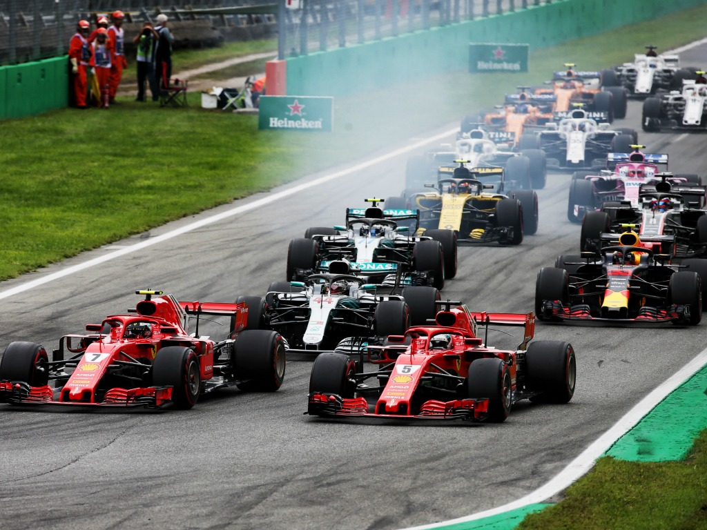
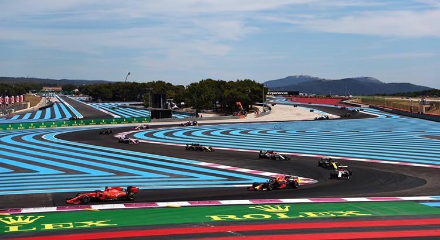

Grand Prix De Monaco : Le grand prix de Monaco est le plus vieux grand prix du championnat du monde de Formule 1. Il y est depuis 1950. A l'époque la sécurité n'était pas une priorité et il était fréquent que des pilotes tombent dans le port de Monaco. Le circuit est situé en pleine ville et les dépassements sont très difficiles du fait de la faible largeur de la piste.
Grand Prix De Belgique : Le grand prix de Belgique est également un grand prix très ancien qui à connu plusieurs longueurs de tracé. le Raidillon d'Eau Rouge est un virage emblématique du circuit actuel. Comme montré sur l'image c'est un virage en forte pente avec un "gauche-droite-gauche" qui se passe à plus de 250 km/h. Ce virage entraine de 3 à 4 G latéraux.
Grand Prix D'Italie : Le grand d'Italie est LE rendez-vous des tifosi (fans) de Ferrari. Il à souvent été situé au circuit d'Imola mais face à l'accident de Ayrton Senna en 1994, les organisateurs ont décidés de changer pour Monza. Ce circuit est souvent surnommé "Le Temple De La Vitesse" avec des pointes à plus de 350 km/h.
Grand Prix De France : Ce grand prix est le seul auquel j'ai pu assister. Il se situe au Castellet dans le Var et à été construit par Paul Ricard, le circuit porte d'ailleur son nom. C'est un circuit assez rapide avec une longue ligne droite coupée par une chicane. Les bandes bleu sont un revêtement spécialement conçu pour ralentir les vehicules.
.png)